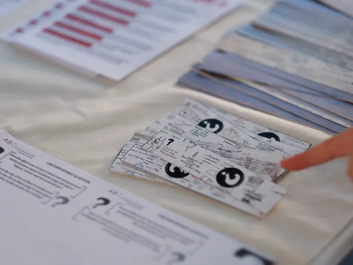
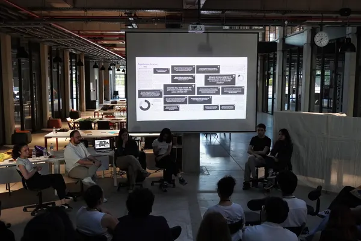
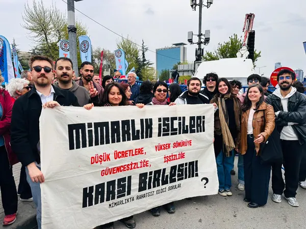
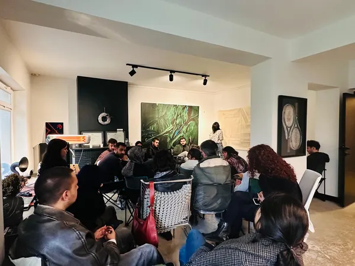
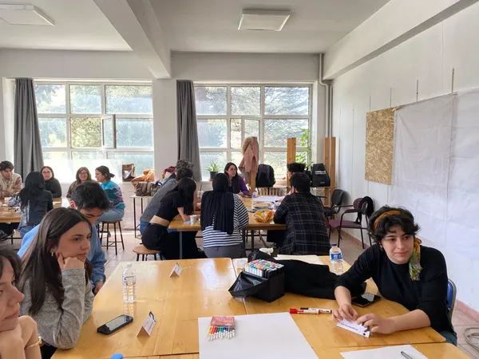

Duyurular
Yaklaşan etkinlikler
Tarihi gelmemiş her etkinlik burada bir kartla duruyor: afişi, tarihi, türü. Karta tıklayınca etkinliğin kendi duyuru sayfası açılıyor.
-

yaklaşan Konferans / Atölye 19–20 Eylül 2026 Situated Architectural Pedagogies of Co-making / Becoming -

Açık Ders / Atölye / Sunum 6 Haziran 2026 Tamirhane Mimarlık Festivali -

Gösteri 1 Mayıs 2026 1 Mayıs Tandoğan -

Toplantı / Atölye 19 Nisan 2026 Mimarık İşçileri Buluşması -

Atölye 13 Nisan 2026 Atölye - Kabuk Fanzin - Konferans / Forum 8 Şubat 2026 AKEA Çalışan Mimarların/Mühendislerin/Teknisyenlerin Uluslararası Deneyimleri
Liste elle yazılmıyor: Excel'de tarihi bugünden ileri olan her etkinlik satırı kendiliğinden buraya düşüyor, tarih geçince kartı arşive geçiyor. Şu an Excel'de tarihi geçmemiş 1 etkinlik var; ızgara boş görünmesin diye örnekte en yeni altı etkinlik gösteriliyor, gerçekten yaklaşan olan “yaklaşan” rozetini taşıyor.